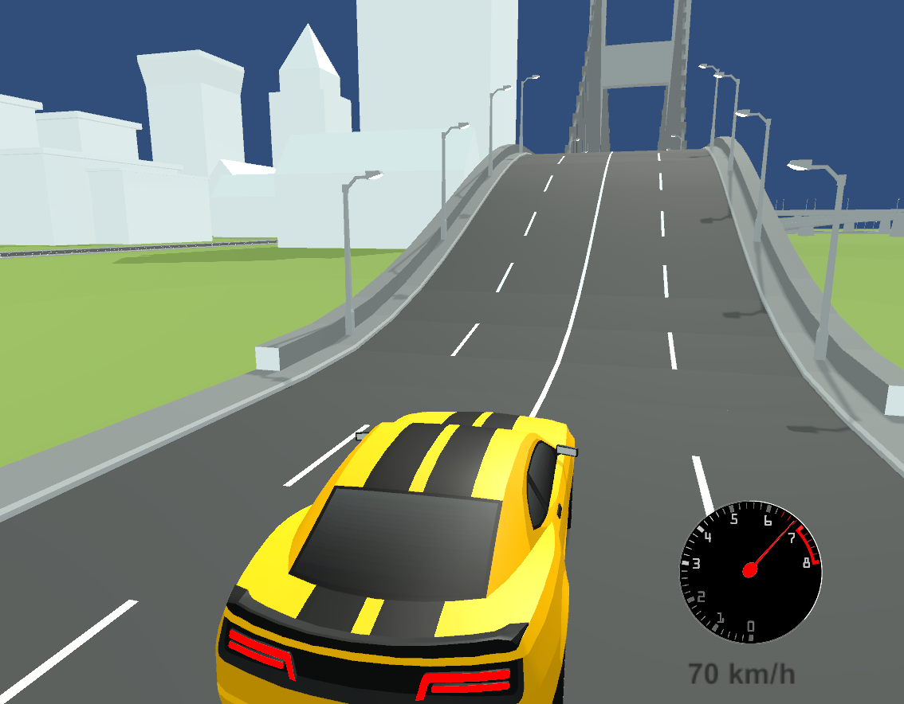

31206 문현진
이 게임은 Unity와 C#을 활용하여 개발한 자동차 시뮬레이션 게임입니다. 실제 차량과 유사한 조향, 가속, 브레이크, 시동, 오디오 등을 구현하였습니다.
자동차의 모든 움직임은 CarController.cs 스크립트로 제어됩니다. 주요 기능은 다음과 같습니다:
IEnumerator StartEngine()
{
if (isStarting) yield break;
isStarting = true;
if (carAudioController != null)
yield return StartCoroutine(carAudioController.StartEngine());
else
yield return null;
isEngineOn = true;
isStarting = false;
}
이 게임과 웹사이트는 고등학교 3학년 홍길동이 개발했습니다.
Unity, C#, 오디오 믹싱 및 게임 물리 구현을 직접 설계하였습니다.
📧 이메일: mswyoon@gmail.com